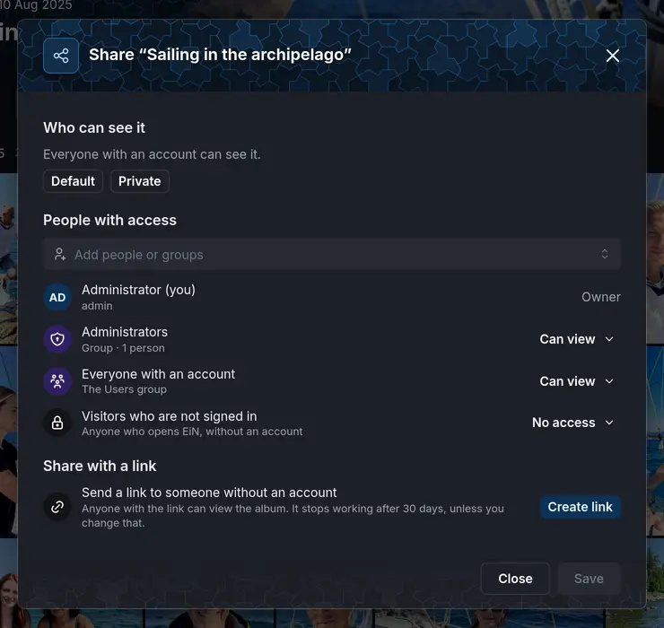
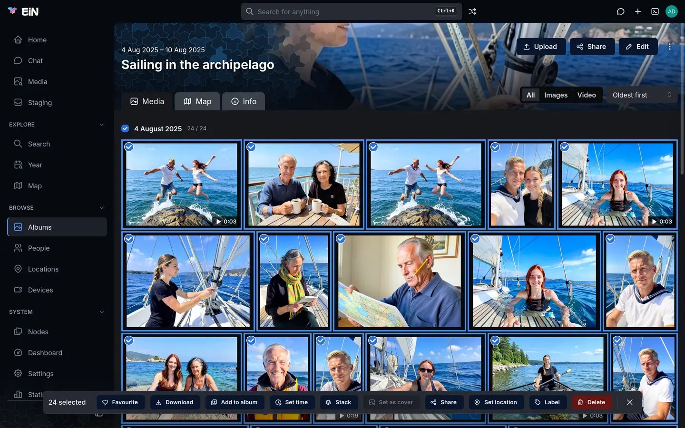

Whoever may change an album decides who else sees it. This page is for everyone in the family who shares albums: the Share dialog, the chip that says how visible something is, links for people without an account, keeping a few photos private in a shared album, how new albums start out, and why you may not see everything that is there.
Who can see an album
An album, and everything in it, can be seen by:
- its owner, usually whoever made it, who can always see and change it;
- the people and groups it is shared with, each with Can view or Can edit;
- everyone with an account, when it is shared with them, as most albums are;
- visitors who are not signed in, only when the administrator lets visitors browse and the album is shared with them;
- anyone with its link, a link you send to someone without an account.
On a standard installation a new album starts out seen by everyone with an account and changed only by you. How new albums start out has the details.
You do not need to know how this is stored. The Share dialog says it in words, and Permissions in depth has the exact rules underneath.
Open the Share dialog
Share is offered only on things you may change:
- An album: Share in the album's header. On a phone the header's buttons are under ⋮.
- A person, a location or a device: Share in its header. Sharing a person shares their page, not the photos they are in.
- One photo, video or recording: open it in the viewer and choose Share in the pencil menu of the details panel (see Viewing photos, videos and recordings).
- Several photos of an album: select them and choose Share in the selection bar; see Keep some photos private in a shared album.
- Anything in the tree, for an administrator: open Nodes under System in the sidebar, pick the node and choose the Sharing tab.
The chip under an album's title, and the one in the viewer's details panel, open the same dialog; see The visibility chip. Opened by someone who may only look, the dialog shows who has access without letting them change it, and says "Only Helen Okafor and people who can edit it can change who it is shared with."


The dialog is headed with what it shares, such as Share “Christmas at the cottage”, and has up to four parts: Who can see it, People with access, Share with a link (albums only) and With their own sharing (when some photos keep sharing of their own).
Share an album with people
- Open the album and choose Share.
- Under People with access, click Add people or groups and type a name. The list offers Everyone with an account first, then groups, such as Family (group), then people, such as Jon Wrenfield (jon). Choose one. The new row starts at Can view.
- To let someone change the album too, open the menu at the right of their row and choose Can edit.
- To take someone away, open the same menu and choose Remove access.
- Choose Save.
Nothing changes until you choose Save. Until then the button at the left says Cancel, and closing the dialog drops your changes. Once nothing is left to save it says Close.
Who can see it, and the two presets
The top of the dialog says in a sentence who can see the album, with the visibility chip beside the heading. The sentence follows your changes before you save, so you can see what a change will do.
Two buttons fill the list for you:
| Button | What it sets |
|---|---|
| Default | Everyone with an account can view it, and nobody else is listed. The owner keeps their access. |
| Private | Nobody but the owner: every person, group and visitor row is taken away. |
The button that matches the list is highlighted. A preset only fills the list; Save applies it.
Default here always means "everyone with an account can see it". It is not the sharing your administrator chose for new albums, which can be narrower.
Private does not touch a share link. An album with a link stays Public to anyone holding the link until you choose Delete link under Share with a link.
On a photo that keeps its own sharing there is a third button, Like the album. It shares the photo as the album is, and lets the album's later changes reach it again. See Put photos back to the album's sharing.
People with access
The list starts with the owner, marked Owner (and "(you)" when it is you). Then comes everyone the album is shared with, each row with a picture, a name and a line under it:
| Row | The line under it | Who it is |
|---|---|---|
| Everyone with an account | The Users group | Everyone who signs in, including accounts made later. |
| A group, such as Family | Group · 6 people | The members of the group, as the administrator set it up. |
| A person | Their username | That account only. |
When the list is empty, it says "Nobody else has access."
Each row's menu sets what they may do:
| Level | What the menu says | What it allows |
|---|---|---|
| Can view | See it and download it | Open the album and its pictures, and download them. |
| Can edit | Also add to it, change it and delete from it | Everything above, and add pictures, change them, delete from the album, and change who it is shared with, links included. |
| Remove access | Takes the row away when you save. |
Give Can edit only to people you trust with the album: they can share it further or make it private.
Groups are made by the administrator, under Settings → Groups (see
Accounts and groups). To share with part of the family only, ask for a
group such as family, then share with the group rather than with each person. An administrator
can rest the pointer on a group's row to see who is in it.
Visitors who are not signed in
Visitors who are not signed in is a row of its own, under the others. It is there when the administrator lets visitors browse EiN without an account, and then says "Anyone who opens EiN, without an account". Its menu has only Can view and No access: visitors never change anything.
When visitors may not browse, the row is shown only on something already shared with them, and says "This EiN asks visitors to sign in, so they see it only once it lets them browse." To let one person without an account see an album, send them a link instead.
What Save does
Save applies the list to the album and to everything in it, in one go. Two kinds of things inside are left as they are:
- photos that keep their own sharing (see Keep some photos private in a shared album);
- what you may not change, or may not even see.
The dialog says what happened under the list: "Saved.", followed by "2 items inside keep their own sharing." or "3 items inside were left as they were: you cannot change them." where that applies.
Pictures uploaded into the album later get the album's sharing, its link included. A picture added to the album from another album keeps the sharing of the album it lives in: sharing this album does not change it, and someone who may see this album but not the other one cannot open it.
The visibility chip
Under an album's title, and in the viewer's details panel for a single file, a small coloured chip says how widely it is shared. Resting the pointer on it shows the sentence from the table, and clicking it opens the Share dialog.
| Chip | When | What it says |
|---|---|---|
| Public, green, with a globe | A share link opens it, or it is shared with visitors and visitors may browse. | "Anyone with its link, or any visitor, can see it without signing in" |
| No chip | Everyone with an account can see it. | "Everyone with an account can see it" (in the dialog) |
| Restricted, orange, with a lock | Some people or groups besides the owner can see it, but not everyone with an account. | "Only some of the people with an account can see it" |
| Private, red, with a lock | Nobody but its owner. | "Only its owner can see it" |
Most albums have no chip, because most are seen by everyone with an account. Visitors and people who opened a link never see the chip: they are not told who else can see something.
Share an album with a link
A link lets someone without an account see one album, without signing in. Links are made for albums only.
- Open the album and choose Share.
- Under Share with a link, next to "Send a link to someone without an account", choose Create link. The link is made at once; it does not wait for Save.
- Click the address, your EiN's address followed by
/s/and a code, or the copy button at its right. EiN says "Link copied to clipboard". - Paste the link into a message to the person.
The address starts with the address you opened EiN at. Open EiN at an address the person can
reach before you copy the link: one with localhost in it works only on the machine EiN runs on,
and one such as http://ein.local:8080 only on your home network. Reaching EiN from outside the
home is the administrator's to set up; see Ports, HTTPS and remote access.
Under the address, the link's row says when it stops working and how often it has been opened:
- When it stops working. A new link works for 30 days: "Expires in 30 days, on 24 Nov". Click that text for the Works for menu: 1 day, 1 week, 30 days, 3 months, 1 year or No end date, counted from now. The change is made at once. A link without an end says "Never expires", and one in its last day "Expires within a day".
- How often it was opened. "Not opened yet", "Opened once, last today", "Opened 4 times, last yesterday", "Opened 9 times, last 3 days ago", or a date. The count covers everyone who has the link; it does not say who opened it.
- Delete link turns the link off at once, for everyone who has it.
The album gets one link in the dialog, so everyone you send it to uses the same address. While the album has a link its chip says Public.
The link opens the album and everything in it that you may change, except photos that keep their own sharing: then the dialog adds "The link does not open what keeps its own sharing, listed below." Pictures uploaded into the album later are opened by the link too.
Someone who may only look at the album sees that it has a link, when it expires and how often it was opened, but not the address. Without a link, they see "No link opens this album."
What the person you send it to sees
- The link opens a page that says "Opening what was shared with you…".
- Then the album's page opens, without signing in.
They see that album and what is in it, and no other page of EiN: there is no sidebar and no search box, and the EiN mark at the top leads back to the album. Any other page asks them to sign in. In the viewer they see the pictures without the details panel, and can save each one with Download in the viewer's More menu.
A few things to know about links:
- A browser holds one link at a time. Opening a link to another album leaves the first one. To go back, open the first link again.
- Someone signed in stays themselves. If the person has an account and is signed in, the album opens as their own account sees it.
- Where visitors may browse, someone who opened a link also sees what visitors see.
When a link has expired or been deleted, or the address is mistyped, the page says This link no longer works: "It may have expired, or the person who shared it has turned it off. Ask them to send you a new link." with a Sign in button for someone who has an account.
When a link expires
An expired link opens nothing. The dialog shows it marked Expired until EiN clears expired links, which it does every hour by default. While it is still listed, choose a new time in its Works for menu to make the same address work again, or choose Delete link and then Create link for a new address.
Keep some photos private in a shared album
You can keep a few photos of a shared album to yourself, or show them to fewer people, without moving them out of the album.


- In the album, select the photos: tick the round box in a picture's top-left corner, Ctrl-click (⌘-click on a Mac) to add more, or Shift-click to add a range. On a phone, press and hold a picture. Albums has every way to select.
- Choose Share in the selection bar at the bottom. The dialog is headed Share 3 photos, with "In “Christmas at the cottage”" under it.
- Choose Their own sharing: "Only those you choose below. They keep this when the album's sharing changes, and the album's link does not open them."
- Under People with access, the photos start with nobody but their owner ("Each keeps its owner, who can always see and change it."). Leave it so to keep them to yourself, or add the people or groups who should still see them.
- Choose Save. EiN says "3 photos now keep their own sharing".
Everyone else no longer sees those photos in the album at all, and the album's link does not open them. When the album's sharing changes later, they keep theirs.
If you may change the album, a lock in the corner of a picture marks one that keeps its own sharing; resting the pointer on it says "Keeps its own sharing". A folder inside an album can carry the lock too. People who may only look at the album do not see it.
Share in the selection bar is greyed out when the selection includes a picture that is only linked into this album from another album. Such a picture has the sharing of the album it lives in; change it there.
Selecting only photos that already keep their own sharing opens the dialog on Their own sharing, with the first photo's people, so you can change who sees them.
Put photos back to the album's sharing
There are three ways:
- From the selection bar. Select the photos, choose Share, then Like the album: "Whoever can see “Christmas at the cottage” can see them. When the album's sharing changes, they change with it." Choose Save. EiN says "3 photos shared like the album".
- From the album's Share dialog. With their own sharing, with a count beside it, lists the photos that keep their own sharing: "These keep their own sharing: changes to the album's sharing, and its link, do not reach them." Each row shows the photo, its name and Private, Shared differently or Open to visitors. Share like the album on a row puts that photo back at once, and Share all like the album puts them all back. The first five are listed; Show all 12 lists the rest.
- From the viewer. Open the photo, choose Share in the pencil menu, and the dialog says "It keeps its own sharing: changes to the album “Christmas at the cottage” do not reach it." Choose Like the album, then Save.
How new albums start out
Create → Album asks only for a name and a description. The new album gets the sharing your new albums start with, which comes from two places.
The administrator's default sharing, under Settings → Permissions → Sharing, sets who may
see and change anything created as shared, which group it is shared with, and, if they choose, an
account that owns it instead of its creator. On a standard installation the group is users, so
a new album is seen by everyone with an account and changed only by you. See
Permissions in depth.
Your own preference narrows or widens that. Choose your picture at the right of the top bar, then Profile, the Preferences tab, and How widely what you create is shared:
| Choice | A new album starts out |
|---|---|
default |
As the administrator set it. This is the choice until you change it. |
private |
Seen by you alone. Its chip says Private. |
shared |
Seen by the administrator's default group. On a standard installation that is everyone with an account; with a narrower group, such as family, only its members. |
everyone |
Seen by the default group and by everyone with an account. It never includes visitors who are not signed in. |
Change the choice and Save change appears under it. Your profile, favourites and trash has more on preferences.
The preference applies to albums you create with Create → Album, and to new albums you make when you file pictures from your staging area. There, New private album always makes one only you can open, and pictures filed into an existing album take that album's sharing; see Sorting in staging. Anything else you create, such as a person or a location, or a picture you upload into an album, takes the sharing of where it is created.
Changing the preference changes no album you already have. To change one, use its Share dialog.
What you cannot see
EiN leaves out what you may not open. An album, photo or folder that is private to someone else is
not listed to you at all: not on Albums, not in News or search, not on the map, not in ls
or find in the terminal. Here EiN differs from the files on a computer, where you see every name
in a folder you can open, only not what is inside. So two people can see the same album
differently, and an album can look emptier to you than to its owner. The administrator sees all of
it.
What is hidden is still there, and that explains some surprises:
- Counts are your own. The number on an album's card counts only the pictures you can see, so it can differ from person to person.
- Changing an album's sharing leaves what you cannot see as it is. The Share dialog says
"3 items inside were left as they were: you cannot change them."; in the terminal,
share-setandchmod -rsay "1 child the caller may not read left unchanged". - Moving or renaming an album or folder takes everything in it along, including what you cannot see. So does moving it to the trash.
- A folder can look empty and not be. In the terminal,
rmdiranswers "Directory not empty" andrm"Node not empty" for a folder whose only contents are hidden from you. - A name can be taken by something you cannot see. Moving something to that name fails with "Access denied for operation 'w'".
- Copying a folder fails if it holds anything you cannot read, with "Access denied for operation 'r'" naming the folder, rather than making a copy that is missing it.
- Deleting a folder you may change with
rm -rdeletes everything in it, including what you cannot see, as on a computer, where deleting needs only the right to change the folder.
If something behaves as though it holds more than you see, ask its owner or the administrator.
When something goes differently
There is no Share button. You may not change the album, person or file. Ask its owner to give you Can edit, or to share it for you.
Someone you shared with cannot see the album. If you shared it with a group they joined recently, they sign out and in again: group changes apply at the next sign-in. If they see the album but miss some pictures, those keep their own sharing (the lock), or live in another album that is not shared with them.
Share in the selection bar is greyed out. The selection includes a picture linked in from another album. Select only pictures that live in this album, or change the other album's sharing.
There is no Share with a link part. Links are made for albums only, not for a person, a location, a device or a single photo.
The person you sent a link to sees "This link no longer works". The link expired or was deleted, or the address was cut short when it was pasted. Look in the album's Share dialog: create a link, or give the expired one a new time, and send it again.
The link does not load for them at all. The address points somewhere they cannot reach, such
as localhost or your home network. Open EiN at an address they can reach and copy the link
again.
The person with the link sees the album as their own account sees it. They were signed in when they opened the link, and then their own access counts. If they sign out and open the link again, it opens the album for them.
EiN says "The browser would not copy the link: it is selected for you to copy." Browsers allow copying only on some pages, such as those over HTTPS. The address is selected: press Ctrl+C (⌘+C on a Mac).
The album still says Public after you chose Private. It has a link. Choose Delete link under Share with a link.
There is no Visitors who are not signed in row. Visitors may not browse this EiN. The administrator turns that on; see Accounts and groups. To show one album to someone without an account, send a link instead.
New albums start out private, or shared more widely, than you expected. Check How widely what you create is shared under Profile → Preferences, and ask the administrator what the default sharing is.
From the terminal
The same can be done in EiN's terminal:
# in EiN's terminal
share-info '/archive/albums/Christmas at the cottage' # who has access, and through what
share-link create '/archive/albums/Christmas at the cottage' # a link for 30 days
share-link list # the links you made
share-link remove 3f9a0c1d2e4b5a69 # turn one off, by its id
album create '/archive/albums/Christmas 1998' --name 'Christmas 1998' --share privateshare-link create prints the end of the address, what it opens and until when; put your EiN's
address in front of it:
/s/q7Rk2mWx9TbN4vLc8HsJ3d opens /archive/albums/Christmas at the cottage until 2026-11-24T10:12:00.000ZThe reference has every option: share-info,
share-link,
share-set and
album. Permissions in depth
explains chmod, chown and acl, which the dialog sets for you.